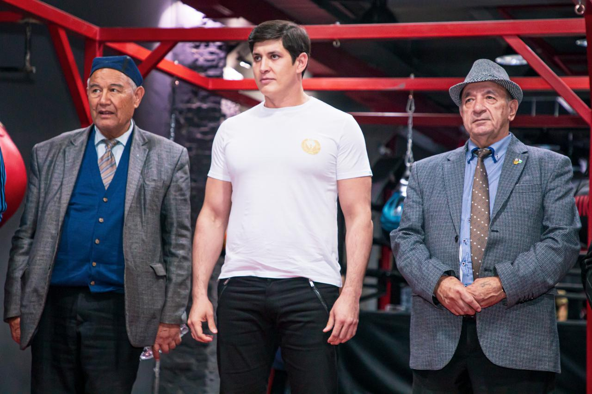
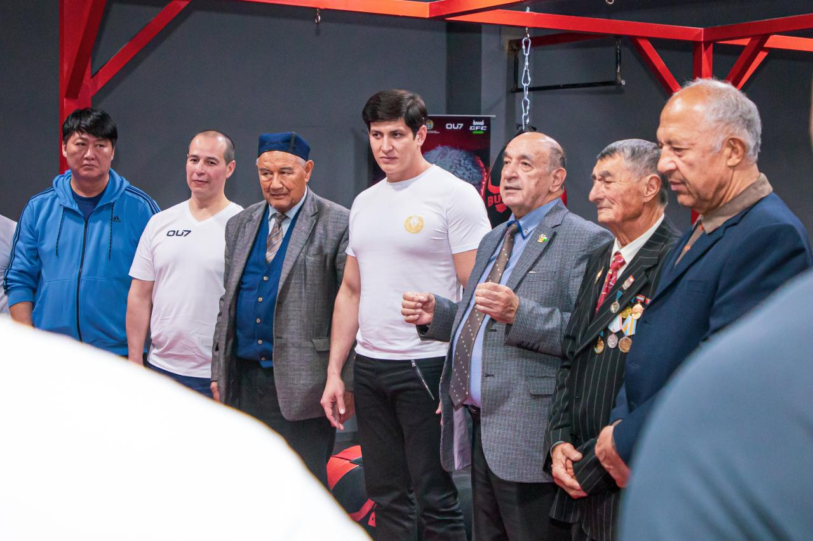
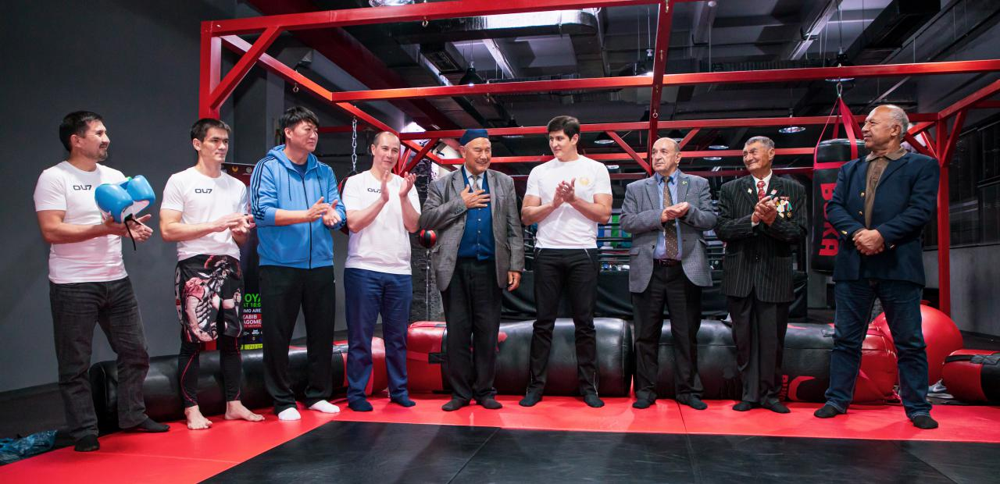
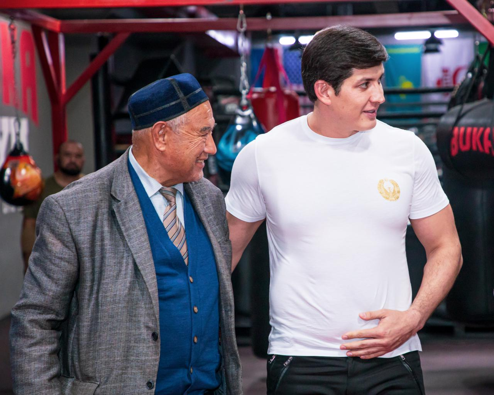
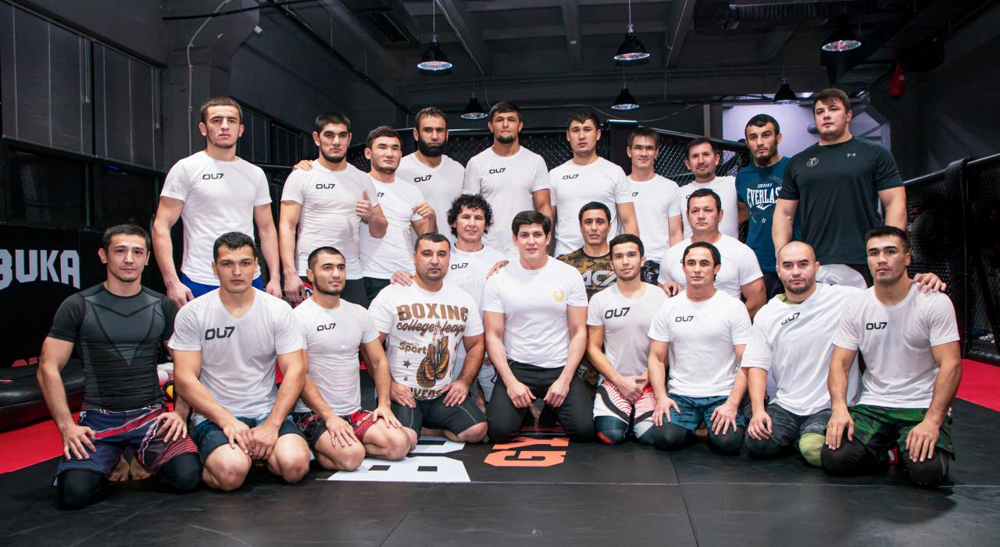

MMA Association established in Uzbekistan. Otabek Umarov elected as Head of the Association
A document confirming the creation of this Association was issued on October 23 of this year.

A document confirming the creation of this Association was issued on October 23 of this year.
On November 8, Otabek Umarov, as president of the Association of Mixed Martial Arts, attended the training of athletes. He came to the Buka GYM sports center to talk with wrestlers, who will participate in the 20th GFC tournament held in accordance with the MMA rules. The sporting event will be held in Tashkent and this will be the first official mixed martial arts tournament in the history of our country.

Otabek Umarov, in his address to the athletes, noted that the MMA Association in Uzbekistan has only been formed and has been given great responsibility. There is a lot of teamwork ahead.


Together with the head of the Association, veterans of sports and representatives of various types of martial arts delivered welcoming speeches and wished athletes success

With the creation of the Mixed Martial Arts Association, fighters will have the opportunity to train under the supervision of qualified trainers. In addition, strict medical monitoring of the athletes’ health will be established, and support will also be provided in obtaining the necessary documentation for participation in international competitions.